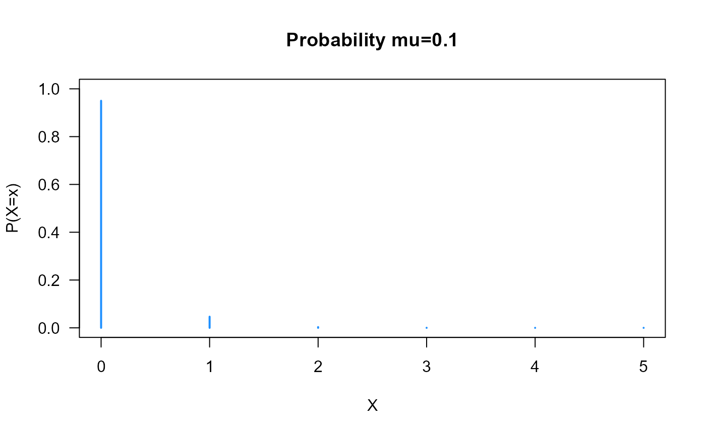
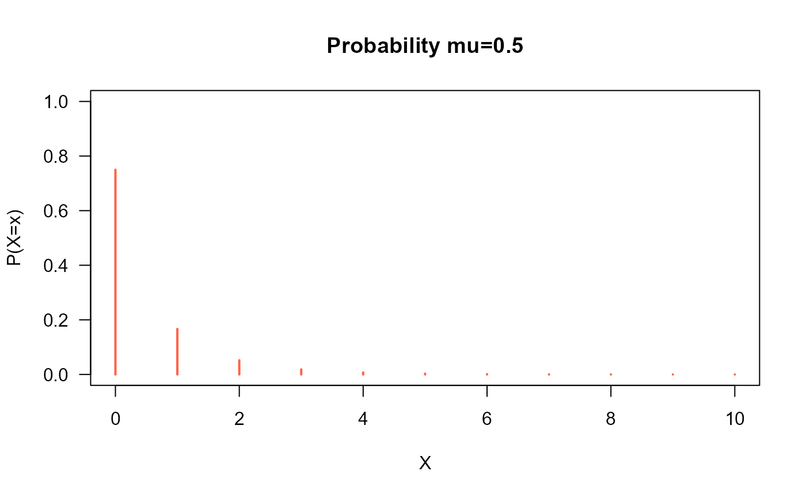
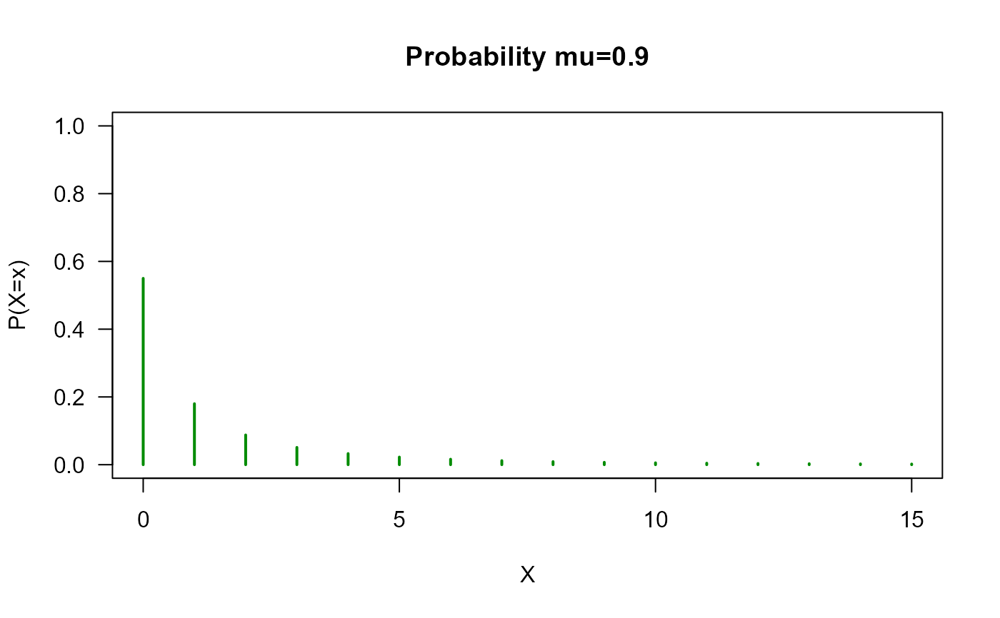
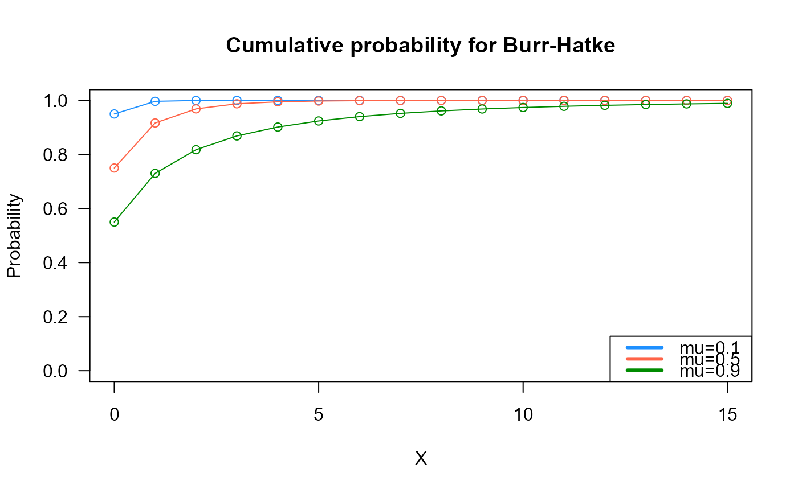
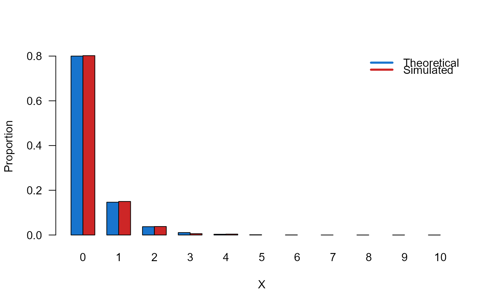

dDBH.RdThese functions define the density, distribution function, quantile function and random generation for the Discrete Burr Hatke distribution with parameter \(\mu\).
dDBH(x, mu, log = FALSE)
pDBH(q, mu, lower.tail = TRUE, log.p = FALSE)
qDBH(p, mu = 1, lower.tail = TRUE, log.p = FALSE)
rDBH(n, mu = 1)vector of (non-negative integer) quantiles.
vector of the mu parameter.
logical; if TRUE, probabilities p are given as log(p).
logical; if TRUE (default), probabilities are \(P[X <= x]\), otherwise, P[X > x].
vector of probabilities.
number of random values to return
dDBH gives the density, pDBH gives the distribution
function, qDBH gives the quantile function, rDBH
generates random deviates.
The Discrete Burr-Hatke distribution with parameters \(\mu\) has a support 0, 1, 2, ... and density given by
\(f(x | \mu) = (\frac{1}{x+1}-\frac{\mu}{x+2})\mu^{x}\)
The pmf is log-convex for all values of \(0 < \mu < 1\), where \(\frac{f(x+1;\mu)}{f(x;\mu)}\) is an increasing function in \(x\) for all values of the parameter \(\mu\).
Note: in this implementation we changed the original parameters \(\lambda\) for \(\mu\), we did it to implement this distribution within gamlss framework.
El-Morshedy M, Eliwa MS, Altun E (2020). “Discrete Burr-Hatke distribution with properties, estimation methods and regression model.” IEEE access, 8, 74359--74370.
DBH.
# Example 1
par(mfrow=c(1, 3))
plot(x=0:5, y=dDBH(x=0:5, mu=0.1),
type="h", lwd=2, col="dodgerblue", las=1,
ylab="P(X=x)", xlab="X", ylim=c(0, 1),
main="Probability mu=0.1")
plot(x=0:10, y=dDBH(x=0:10, mu=0.5),
type="h", lwd=2, col="tomato", las=1,
ylab="P(X=x)", xlab="X", ylim=c(0, 1),
main="Probability mu=0.5")
plot(x=0:15, y=dDBH(x=0:15, mu=0.9),
type="h", lwd=2, col="green4", las=1,
ylab="P(X=x)", xlab="X", ylim=c(0, 1),
main="Probability mu=0.9")

# Example 2
# Checking if curves go to 1
x_max <- 15
cumulative_probs1 <- pDBH(q=0:x_max, mu=0.1)
cumulative_probs2 <- pDBH(q=0:x_max, mu=0.5)
cumulative_probs3 <- pDBH(q=0:x_max, mu=0.9)
par(mfrow=c(1, 1))
plot(x=0:x_max, y=cumulative_probs1, col="dodgerblue",
type="o", las=1, ylim=c(0, 1),
main="Cumulative probability for Burr-Hatke",
xlab="X", ylab="Probability")
points(x=0:x_max, y=cumulative_probs2, type="o", col="tomato")
points(x=0:x_max, y=cumulative_probs3, type="o", col="green4")
legend("bottomright", col=c("dodgerblue", "tomato", "green4"), lwd=3,
legend=c("mu=0.1",
"mu=0.5",
"mu=0.9"))

# Example 3
# Some tests to compare the simulator with theoretical probabilities
mu <- 0.4
x_max <- 10
probs1 <- dDBH(x=0:x_max, mu=mu)
names(probs1) <- 0:x_max
x <- rDBH(n=1000, mu=mu)
probs2 <- prop.table(table(x))
cn <- union(names(probs1), names(probs2))
height <- rbind(probs1[cn], probs2[cn])
nombres <- cn
mp <- barplot(height, beside = TRUE, names.arg = nombres,
col=c('dodgerblue3','firebrick3'), las=1,
xlab='X', ylab='Proportion')
legend('topright',
legend=c('Theoretical', 'Simulated'),
bty='n', lwd=3,
col=c('dodgerblue3','firebrick3'), lty=1)

# Example 4
mu <- 0.9
p <- seq(from=0, to=0.99999, length.out=100)
plot(x=qDBH(p, mu=mu), y=p, xlab="Quantile",
las=1, ylab="Probability")
curve(pDBH(x, mu=mu), from=0, add=TRUE, col="red")

# Example 5
p <- seq(0, 1, by = 0.01)
mu <- 0.9
qxx <- qDBH(p, mu, lower.tail = TRUE, log.p = FALSE)
plot(p, qxx, type="s", lwd=2, col="darkred", ylab="quantiles",
main="Quantiles of BH(mu=0.9)")
